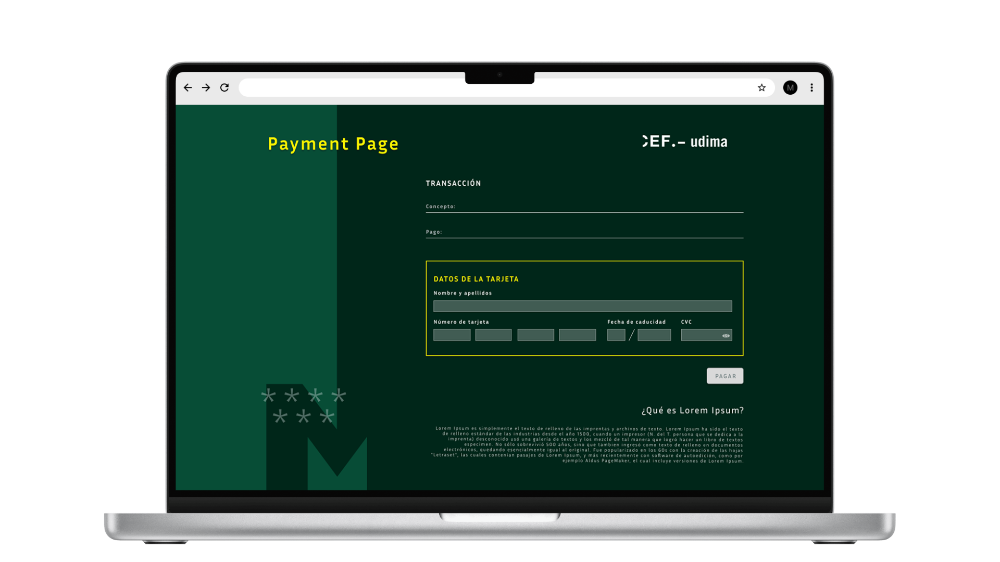
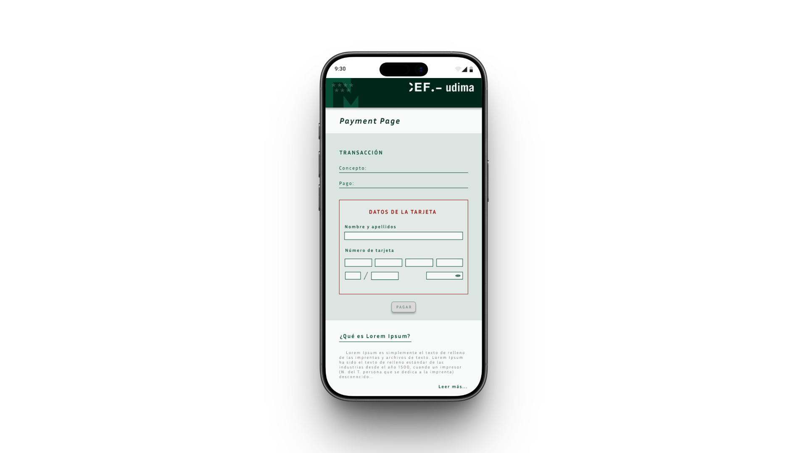

Auditoría, Wireframing
y unificación de la UI
1. Auditoría UX y Triage de problemas
Insight: La auditoría heurística reveló que los problemas no eran estéticos — eran sistémicos. Contraste inferior a 3:1, affordance rota en botones primarios, flujos inconsistentes.
Hipótesis: Si establecemos los estándares antes que la UI, los componentes serán correctos por construcción.
Decisión: Invertir las primeras semanas en auditar y definir el sistema, antes de diseñar pantallas — lo que exigió argumentar a dirección la falta de UI visible inmediata.
2. Definición de Estilos y Accesibilidad (WCAG)
Dado que el producto está dirigido al sector educativo, la accesibilidad era un requisito innegociable. Establecí una nueva paleta de colores corporativos optimizada para garantizar un contraste mínimo (Nivel AA) según las pautas WCAG. También redefiní la tipografía para mejorar la legibilidad y estructuré un sistema de componentes básicos estandarizado.
3. Arquitectura y Diseño Visual de la Herramienta de Calendario
El Calendario Académico no es una simple landing corporativa; es la herramienta interactiva principal que el estudiante consulta a diario para gestionar su activity formativa. Diseñamos este módulo desde el flujo lógico y los wireframes hasta la UI de alta fidelidad, estresando y validando la escalabilidad del nuevo sistema de componentes.
Estructura lógica (Wireframe)
Traspasé el foco de "diseñar pantallas" a "diseñar sistemas". Creamos wireframes de baja fidelidad para resolver la jerarquía del layout base — Navegación, Contenedores, Formularios — antes de inyectar la capa visual. Esto asegura que la lógica funcional esté validada antes de definir colores y tipografías.
Layout base: Distribución clara de contenedores, formularios y paneles de navegación principal.
Contenedores de eventos: Espaciado predecible para las asignaturas y fechas clave del alumno.
/WIREFRAME/wireframe-calendar.png)
Diseño Final: Desktop vs. Mobile
Aplicamos los tokens del nuevo UI Kit centralizado en Figma sobre la estructura lógica validada, logrando una interfaz limpia y de alta accesibilidad, consistente en escritorio y pantallas móviles.
/calendariooo.png)
La versión móvil reorganiza la agenda en una vista de lista y cuadrícula mensual adaptada para interacción táctil en smartphone, garantizando legibilidad y accesibilidad.
Adaptabilidad responsive: Redefinición de cuadrícula y botones flotantes para optimizar el espacio en pantallas verticales.
/calendario.png)
La versión de escritorio del calendario académico permite al estudiante visualizar de un vistazo su agenda académica diaria y semanal, facilitando la interacción rápida con asignaturas y filtros avanzados.
Consistencia visual: Sincronización al 100% con los componentes interactivos del design system y colores de contraste AA (WCAG).
4. Pasarela de Pago: Rediseño del Checkout Responsive
El checkout de matrícula es un flujo crítico donde la fricción se traduce directamente en pérdida de ingresos. Aplicamos el sistema de componentes para rediseñar la pasarela de pago, optimizando la jerarquía visual de los conceptos económicos y estructurando una experiencia adaptativa fluida tanto en desktop como en dispositivos móviles.

En resoluciones de escritorio, el checkout divide la pantalla de forma equilibrada para mostrar en paralelo el desglose transaccional detallado (conceptos de matrícula, descuentos, tasas) y las opciones de pago (tarjeta, financiación, domiciliación).
Estructura en dos columnas: Resumen financiero fijo a la derecha y formulario interactivo de pago a la izquierda.

La versión móvil reorganiza los bloques verticalmente y prioriza el paso de pago activo, reduciendo la altura de scroll requerida para completar la transacción. Los campos de formulario y botones de llamada a la acción adoptan tamaños óptimos para interacción táctil.
Reducción de ruido: Elementos de desglose colapsados en un acordeón resumen al inicio para enfocar la pantalla en los datos de cobro.
5. Login, Landing y Bolsa de Empleo: Portal del Alumno
El portal de acceso y la Bolsa de Empleo unifican la experiencia del estudiante tanto para ingresar a la plataforma como para buscar oportunidades profesionales. Estandarizamos este módulo con las mismas reglas de color y tipografía del Design System, acelerando drásticamente el desarrollo frontend y logrando una presentación de ofertas impecable en todas las pantallas.

El diseño desktop organiza de forma clara las áreas funcionales del portal: acceso directo con credenciales institucionales, listado interactivo de vacantes laborales de la Bolsa de Empleo, y destacados informativos corporativos de CEF.
Reutilización de componentes: Los campos de formulario y las tarjetas de ofertas de empleo se nutren directamente de la librería compartida de Figma.

El layout móvil adapta la visualización priorizando la accesibilidad de las llamadas a la acción primarias y simplificando los bloques informativos de fondo para evitar scroll excesivo en la pantalla táctil.
Coherencia tipográfica: La escala responsive de textos asegura que los títulos de ofertas de empleo y campos de input sigan siendo completamente legibles (relación AA).
6. Handoff y Escalabilidad
El handoff no fue entregar un Figma bien organizado y esperar. Documenté el comportamiento de cada componente — estados, variantes, casos límite — en un formato que el equipo de desarrollo pudiera consumir directamente como referencia de implementación. Eso implica entender cómo se traduce un token de spacing a una variable CSS, cómo se estructura un componente para que sus variantes sean predecibles en código, y dónde está el límite entre lo que se resuelve en diseño y lo que se resuelve en front. Con formación en desarrollo web completo, ese lenguaje no era ajeno — y eso acortó ciclos de revisión de forma visible.
Despliegue del Design System en otros módulos clave:
Figma Tokens: Nomenclatura semántica mapeada con variables CSS de desarrollo.
Matriz de Estados: Comportamientos definidos para Default, Hover, Active, Focus, Disabled y Loading.
Guía de Layout: Breakpoints responsive y reglas de comportamiento adaptativo por componente.